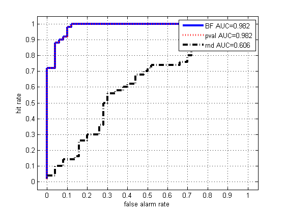

function bayesfactorGeneDemo()
ngenes = 100; nsamples = 2;
mu1 = 0; s1 = 1; mu2 = 5; s2 = 1;
ndx = find(rand(1,ngenes) > 0.5);
truth = zeros(1,ngenes);
truth(ndx) = 1;
Xcontrol = repmat(mu1, ngenes, nsamples) + s1*randn(ngenes, nsamples);
Xtreat = repmat(mu1, ngenes, nsamples) + s1*randn(ngenes, nsamples);
Xtreat(ndx, :) = repmat(mu2, length(ndx), nsamples) + s2*randn(length(ndx), nsamples);
for i=1:ngenes
BF(i) = bayesTtestTwoSample(Xtreat(i,:),Xcontrol(i,:));
end
score = log(1./BF);
for i=1:ngenes
[hyptest(i),pval(i)] = ttest2(Xtreat(i,:), Xcontrol(i,:));
end
scoreFreq = 1./pval;
[faRateBF, hitRateBF, AUCBF] = ROCcurve(log(1./BF), truth, 0);
[faRatePval, hitRatePval, AUCPval] = ROCcurve(1./pval, truth, 0);
R = rand(size(pval));
[faRateRnd, hitRateRnd, AUCRnd] = ROCcurve(R, truth, 0);
figure(1);clf
h=plot(faRateBF, hitRateBF, 'b-'); set(h, 'linewidth', 3)
hold on
h=plot(faRatePval, hitRatePval, 'r:'); set(h, 'linewidth', 3)
h=plot(faRateRnd, hitRateRnd, 'k-.'); set(h, 'linewidth', 3);
e = 0.05; axis([0-e 1+e 0-e 1+e])
xlabel('false alarm rate')
ylabel('hit rate')
grid on
legendstr{1} = sprintf('BF AUC=%5.3f', AUCBF);
legendstr{2} = sprintf('pval AUC=%5.3f', AUCPval);
legendstr{3} = sprintf('rnd AUC=%5.3f', AUCRnd);
legend(legendstr)
if 0
figure(2);clf
perm = 1:ngenes;
doplot(Xcontrol, Xtreat, BF, pval, perm);
figure(3);clf
[junk, perm] = sort(truth);
doplot(Xcontrol, Xtreat, BF, pval, perm);
end
function doplot(Xcontrol, Xtreat, BF, pval, perm)
subplot(2,2,1)
plot(Xcontrol(perm,:)); title('control')
subplot(2,2,2)
plot(Xtreat(perm,:)); title('treatment')
subplot(2,2,3)
scoreBF = log(1./BF);
plot(scoreBF(perm), '-'); title('log(BF(1,0))')
subplot(2,2,4)
scorePval = log(1./pval);
plot(scorePval(perm)); title('log(1/pval)');
